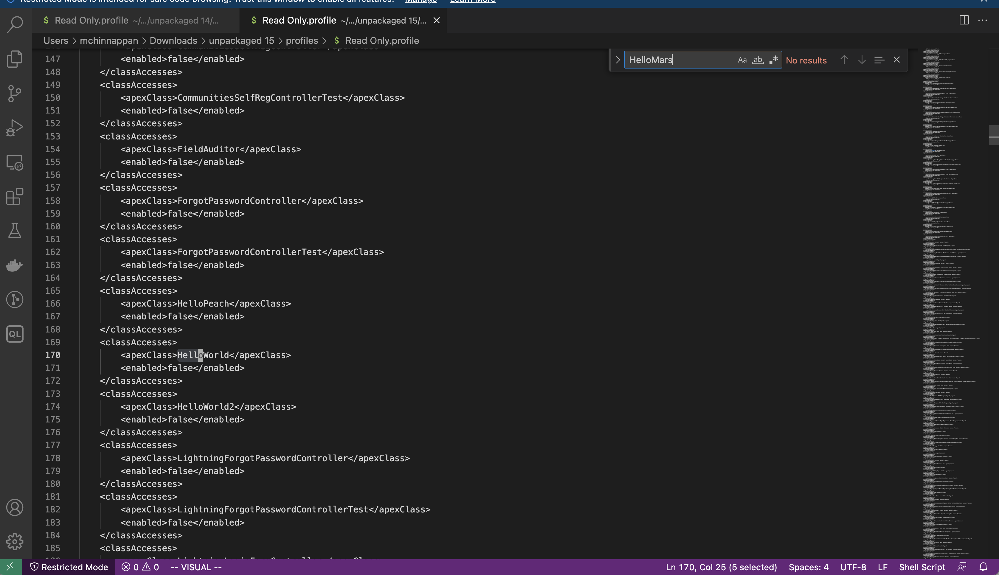

Dangling Fields

Topics
-
Dangling fields are ones which are present assets like Profile but they not in the source asset like Objects. For example
Account.carbonFootprint__cmay be in Profiles/PermissionSets but the Account Object will not have this fieldcarbonFootprint__c -
Having Dangling fields in assets like Profiles makes the deployment task hard, so clean them as soon as possible.
-
I coined this Dangling fields with comparison to dangling pointers in memory model of the languages like C, C++. I am open to your feedback on this naming...
Finding Dangling fields using CLI
list the profile files in json format
sfdx mohanc:mdapi:listFiles -p src -t permissionsets --help
List Dangling Fields
USAGE
$ sfdx mohanc mdapi listFiles [-p <string>] [-t <string>] [--json] [--loglevel trace|debug|info|warn|error|fatal|TRACE|DEBUG|INFO|WARN|ERROR|FATAL]
FLAGS
-p, --projectpath=<value> Project location (say src)
-t, --type=<value> Metadata type (e.g profiles)
--json format output as json
--loglevel=(trace|debug|info|warn|error|fatal|TRACE|DEBUG|INFO|WARN|ERROR|FATAL) [default: warn] logging level for this command invocation
DESCRIPTION
List Dangling Fields
EXAMPLES
List the files of given metadata type
sfdx mohanc:mdapi:listFiles -p <projectPath> -t <metadataType>
Example:
sfdx mohanc:mdapi:listFiles -p src -t <profiles | permissionsets >
sfdx mohanc:mdapi:listFiles -p /path/to/src/folder -t profiles > /tmp/profiles.json
find the dangling fields for those profiles or permissionsets
sfdx mohanc:mdapi:df -i /tmp/permissionsets.json -m PermissionSet --help
List Dangling Fields
USAGE
$ sfdx mohanc mdapi df -i <string> -m <string> [--json] [--loglevel trace|debug|info|warn|error|fatal|TRACE|DEBUG|INFO|WARN|ERROR|FATAL]
FLAGS
-i, --xmls=<value> (required) JSON file with profile xml files
-m, --type=<value> (required) [default: Profile] Profile or PermissionSet
--json format output as json
--loglevel=(trace|debug|info|warn|error|fatal|TRACE|DEBUG|INFO|WARN|ERROR|FATAL) [default: warn] logging level for this command invocation
DESCRIPTION
List Dangling Fields
EXAMPLES
List the dangling files when comparing with fields
sfdx mohanc:mdapi:df -i <XMLfiles.json> -m <Profile | PermissionSet>
sfdx mohanc:mdapi:df -i /tmp/profiles.json > dangling_fields_2.tsv
opens in numbers or Excel
open dangling_fields_2.tsv
cleanup
cd /path/to/src/profiles/folder
rm *.json
cd /path/to/src/permissionsets/folder
rm *.json
How Salesforce Manages profile items life cycle
- Let us explain this creating an Apex Class
HelloMars- set the Security for that class
- verify the profile to have the entry for this classAccess
- delete the class in UI
- verify the profile that Salesforce has removed this classAccess entry in the profile
Create the class HelloMars
~/treeprj [patch1] >sfdx force:apex:class:create -n HelloMars -d force-app/main/default/classes
target dir = /Users/mchinnappan/treeprj/force-app/main/default/classes
create force-app/main/default/classes/HelloMars.cls
create force-app/main/default/classes/HelloMars.cls-meta.xml
~/treeprj [patch1] >tree force-app/main/default/classes
force-app/main/default/classes
├── HelloMars.cls
├── HelloMars.cls-meta.xml
├── HelloPeach.cls
└── HelloPeach.cls-meta.xml
0 directories, 4 files
~/treeprj [patch1] >sfdx force:source:deploy -u mohan.chinnappan.n.sel@gmail.com -p force-app/main/default/classes
Deploying v55.0 metadata to mohan.chinnappan.n.sel@gmail.com using the v57.0 SOAP API
Deploy ID: 0Af4x00000YS5i5CAD
DEPLOY PROGRESS | ████████████████████████████████████████ | 2/2 Components
=== Deployed Source
FULL NAME TYPE PROJECT PATH
────────── ───────── ──────────────────────────────────────────────────────
HelloMars ApexClass force-app/main/default/classes/HelloMars.cls
HelloMars ApexClass force-app/main/default/classes/HelloMars.cls-meta.xml
HelloPeach ApexClass force-app/main/default/classes/HelloPeach.cls
HelloPeach ApexClass force-app/main/default/classes/HelloPeach.cls-meta.xml
Deploy Succeeded.
~/treeprj [patch1] >bat force-app/main/default/classes/HelloMars.cls
───────┬────────────────────────────────────────────────────────────────────────────────────────────────────────────
│ File: force-app/main/default/classes/HelloMars.cls
───────┼────────────────────────────────────────────────────────────────────────────────────────────────────────────
1 │ public with sharing class HelloMars {
2 │ public HelloMars() {
3 │
4 │ }
5 │ }
───────┴────────────────────────────────────────────────────────────────────────────────────────────────────────────
~/treeprj [patch1] >


- After deleting the Class in the UI 
Let us repeat the above exercise, this time will we will use CLI to delete the class
~/treeprj [patch1] >sfdx force:apex:class:create -n HelloEarth -d force-app/main/default/classes
target dir = /Users/mchinnappan/treeprj/force-app/main/default/classes
create force-app/main/default/classes/HelloEarth.cls
create force-app/main/default/classes/HelloEarth.cls-meta.xml
~/treeprj [patch1] >sfdx force:source:deploy -u mohan.chinnappan.n.sel@gmail.com -p force-app/main/default/classes/HelloEarth.cls
Deploying v55.0 metadata to mohan.chinnappan.n.sel@gmail.com using the v57.0 SOAP API
Deploy ID: 0Af4x00000YS5u1CAD
DEPLOY PROGRESS | ████████████████████████████████████████ | 1/1 Components
=== Deployed Source
FULL NAME TYPE PROJECT PATH
────────── ───────── ──────────────────────────────────────────────────────
HelloEarth ApexClass force-app/main/default/classes/HelloEarth.cls
HelloEarth ApexClass force-app/main/default/classes/HelloEarth.cls-meta.xml
Deploy Succeeded.
-

-
Prepare destructiveChanges
~/treeprj [patch1] >cd destructiveChanges
~/treeprj/destructiveChanges [patch1] >ls
destructiveChanges.xml package.xml
~/treeprj/destructiveChanges [patch1] >vi destructiveChanges.xml
~/treeprj/destructiveChanges [patch1] >bat destructiveChanges.xml
───────┬────────────────────────────────────────────────────────────────────────────────────────────────────────────
│ File: destructiveChanges.xml
───────┼────────────────────────────────────────────────────────────────────────────────────────────────────────────
1 │ <?xml version="1.0" encoding="UTF-8"?>
2 │ <Package xmlns="http://soap.sforce.com/2006/04/metadata">
3 │ <version>55.0</version>
4 ~ │
5 ~ │ <types>
6 ~ │ <members>HelloEarth</members>
7 ~ │ <name>ApexClass</name>
8 ~ │ </types>
9 ~ │
10 ~ │ </Package>
───────┴────────────────────────────────────────────────────────────────────────────────────────────────────────────
~/treeprj/destructiveChanges [patch1] >cd ..
~/treeprj [patch1] >vi package.json
~/treeprj [patch1] >vi package.xml
~/treeprj [patch1] >cp destructiveChanges/package.xml .
~/treeprj [patch1] >vi package.xml
~/treeprj [patch1] >bat package.xml
───────┬────────────────────────────────────────────────────────────────────────────────────────────────────────────
│ File: package.xml
───────┼────────────────────────────────────────────────────────────────────────────────────────────────────────────
1 │ <?xml version="1.0" encoding="UTF-8"?>
2 │ <Package xmlns="http://soap.sforce.com/2006/04/metadata">
3 │ <version>55.0</version>
4 │ </Package>
───────┴────────────────────────────────────────────────────────────────────────────────────────────────────────────
~/treeprj [patch1] >sfdx force:source:deploy -x package.xml --postdestructivechanges destructiveChanges/destructiveChanges.xml --verbose --loglevel TRACE -u mohan.chinnappan.n.sel@gmail.com -c
Deploying v55.0 metadata to mohan.chinnappan.n.sel@gmail.com using the v57.0 SOAP API
Deploy ID: 0Af4x00000YS5uBCAT
=== Deleted Source
FULL NAME TYPE PROJECT PATH
────────── ───────── ──────────────────────────────────────────────────────
HelloEarth ApexClass force-app/main/default/classes/HelloEarth.cls
HelloEarth ApexClass force-app/main/default/classes/HelloEarth.cls-meta.xml
Successfully validated the deployment.
~/treeprj [patch1] >sfdx force:source:deploy -x package.xml --postdestructivechanges destructiveChanges/destructiveChanges.xml --verbose --loglevel TRACE -u mohan.chinnappan.n.sel@gmail.com
Deploying v55.0 metadata to mohan.chinnappan.n.sel@gmail.com using the v57.0 SOAP API
Deploy ID: 0Af4x00000YS5uLCAT
=== Deleted Source
FULL NAME TYPE PROJECT PATH
────────── ───────── ──────────────────────────────────────────────────────
HelloEarth ApexClass force-app/main/default/classes/HelloEarth.cls
HelloEarth ApexClass force-app/main/default/classes/HelloEarth.cls-meta.xml
Deploy Succeeded.

About class files in the local folder
- Since destructiveChanges deployment do not change files in the local folder as shown below:
tree force-app/main/default/classes
force-app/main/default/classes
├── HelloEarth.cls
├── HelloEarth.cls-meta.xml
├── HelloMars.cls
├── HelloMars.cls-meta.xml
├── HelloPeach.cls
└── HelloPeach.cls-meta.xml
0 directories, 6 files
~/treeprj [patch1] >sfdx force:source:retrieve -p force-app/main/default/classes -u mohan.chinnappan.n.sel@gmail.com
Retrieving v55.0 metadata from mohan.chinnappan.n.sel@gmail.com using the v57.0 SOAP API
Preparing retrieve request... done
=== Retrieved Source
FULL NAME TYPE PROJECT PATH
────────── ───────── ──────────────────────────────────────────────────────
HelloPeach ApexClass force-app/main/default/classes/HelloPeach.cls
HelloPeach ApexClass force-app/main/default/classes/HelloPeach.cls-meta.xml
=== Retrieved Source Warnings
FILE NAME PROBLEM
────────────────────── ─────────────────────────────────────────────────────────────
unpackaged/package.xml Entity of type 'ApexClass' named 'HelloEarth' cannot be found
unpackaged/package.xml Entity of type 'ApexClass' named 'HelloMars' cannot be found
~/treeprj [patch1] >tree force-app/main/default/classes
force-app/main/default/classes
├── HelloEarth.cls
├── HelloEarth.cls-meta.xml
├── HelloMars.cls
├── HelloMars.cls-meta.xml
├── HelloPeach.cls
└── HelloPeach.cls-meta.xml
0 directories, 6 files
- We need to manually delete them, otherwise the following command (wildcard based) will re-deploy the deleted the classes back into the org
sfdx force:source:deploy -u mohan.chinnappan.n.sel@gmail.com -p force-app/main/default/classes